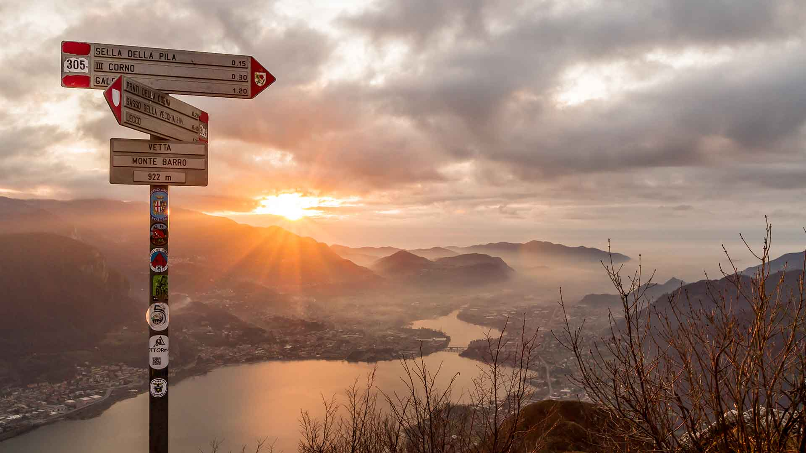

Il monte Barro o monte di Galbiate (in lombardo Barr) è un monte isolato nelle Prealpi Lombarde con un'altitudine di 922 m s.l.m. È una delle prime montagne delle Prealpi ad essere incontrata sulla strada da Milano a Lecco, lungo la statale 36, che passa proprio in una galleria sotto la montagna. Il suo territorio è quasi tutto compreso nel comune di Galbiate, dove ha sede anche l'omonimo parco regionale.
La splendida vista sul lago di Como dalla cima del Resegone
